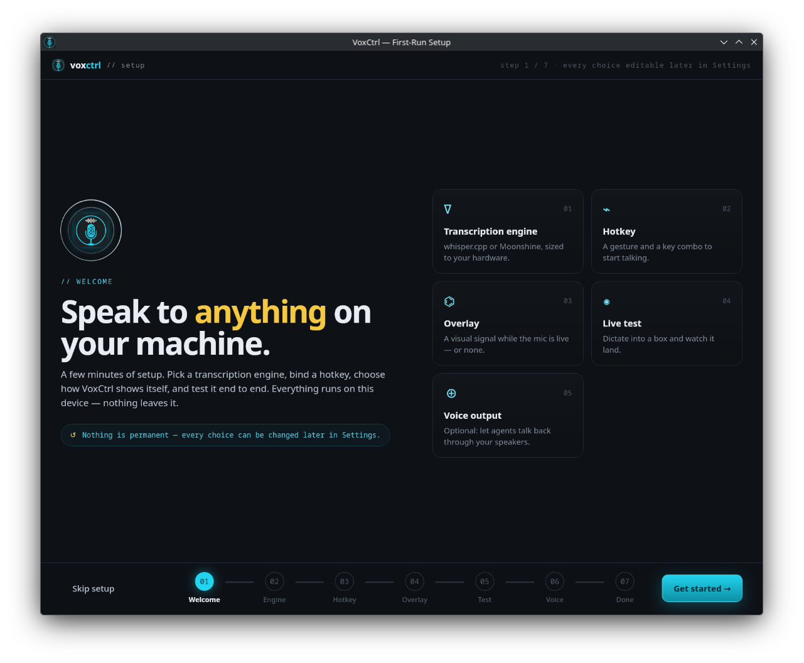
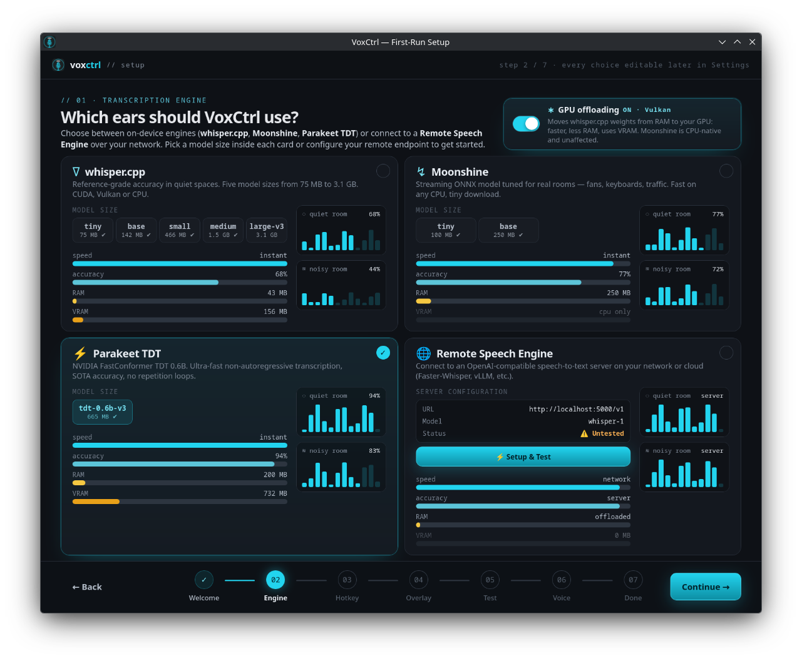
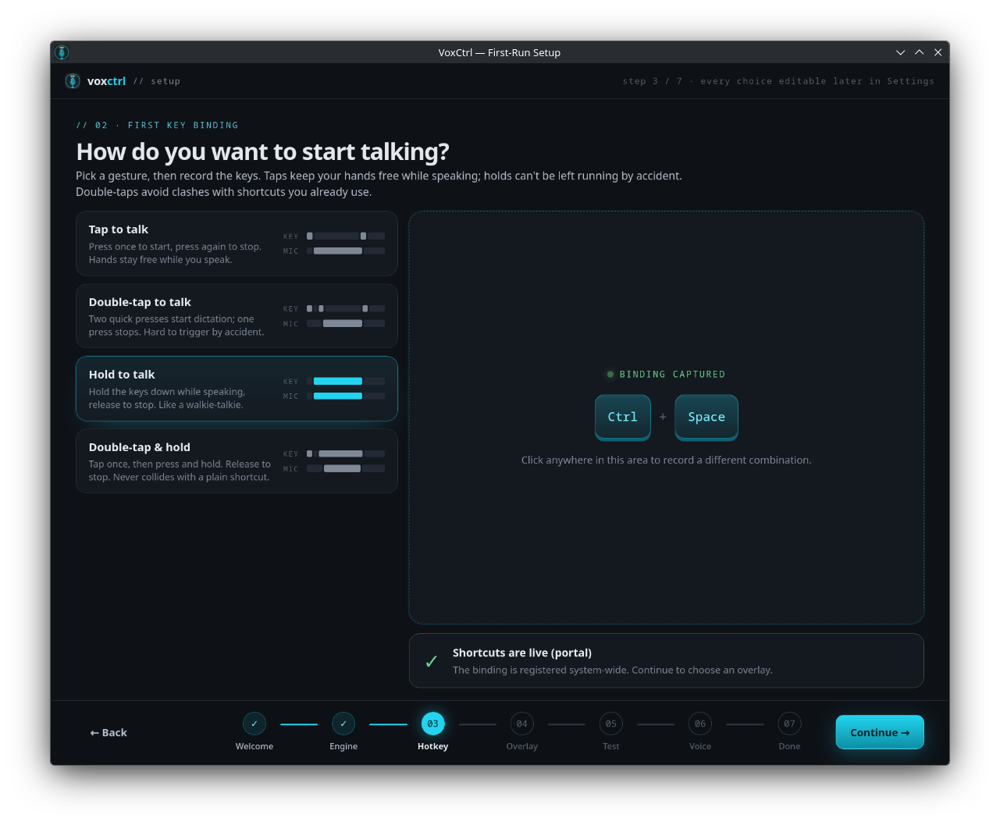
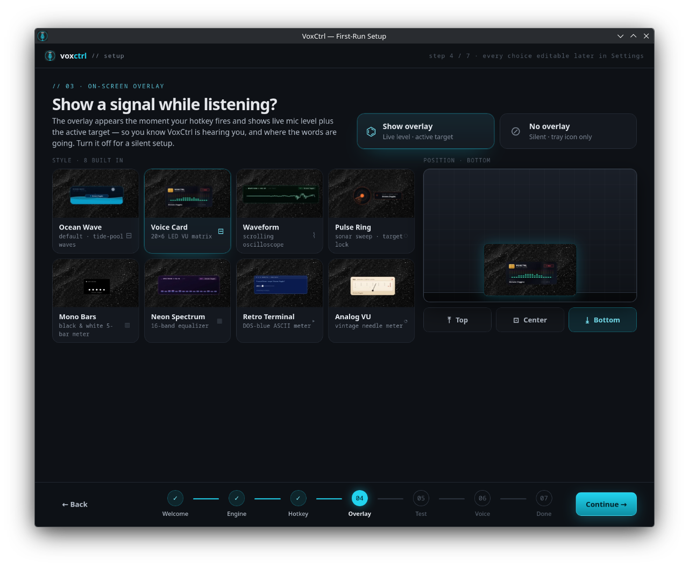
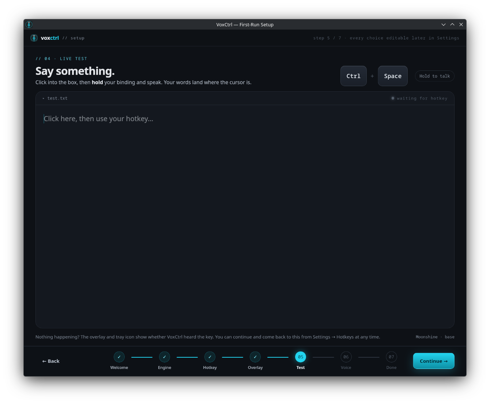
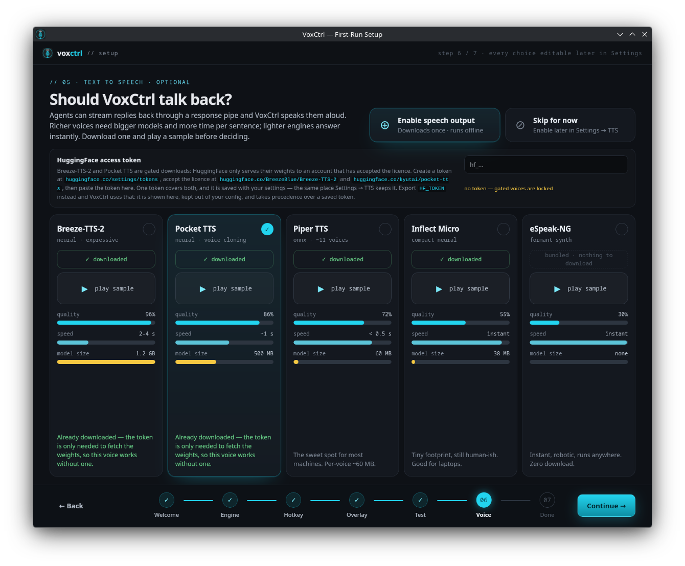
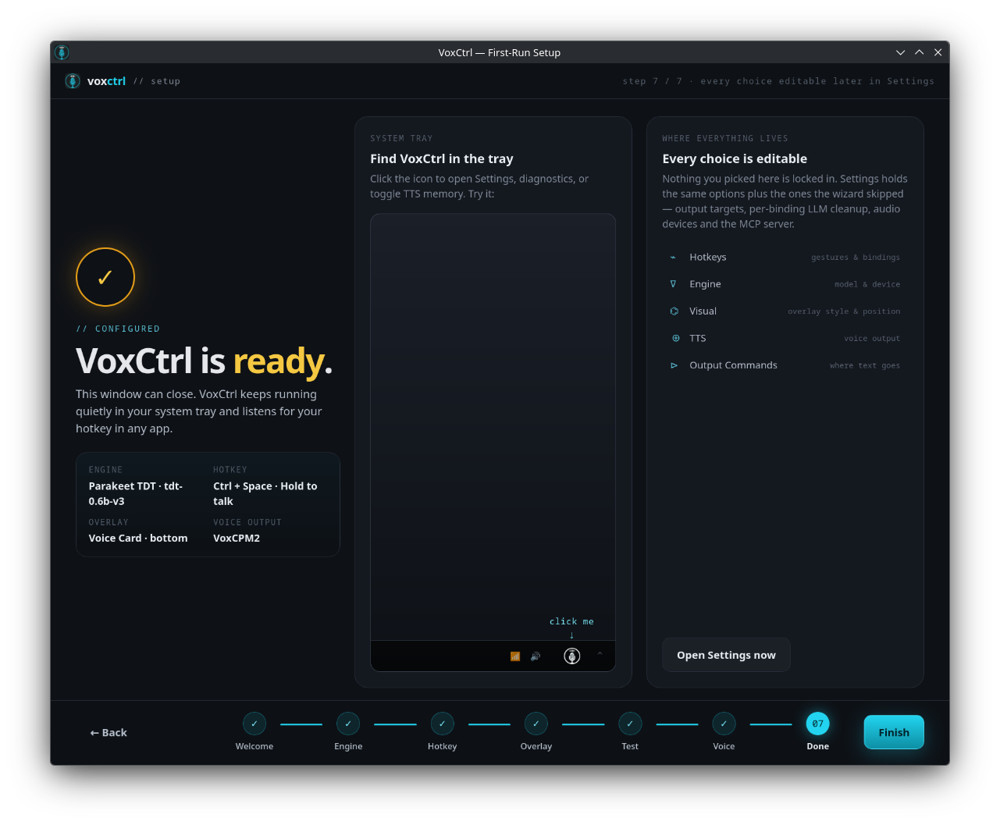
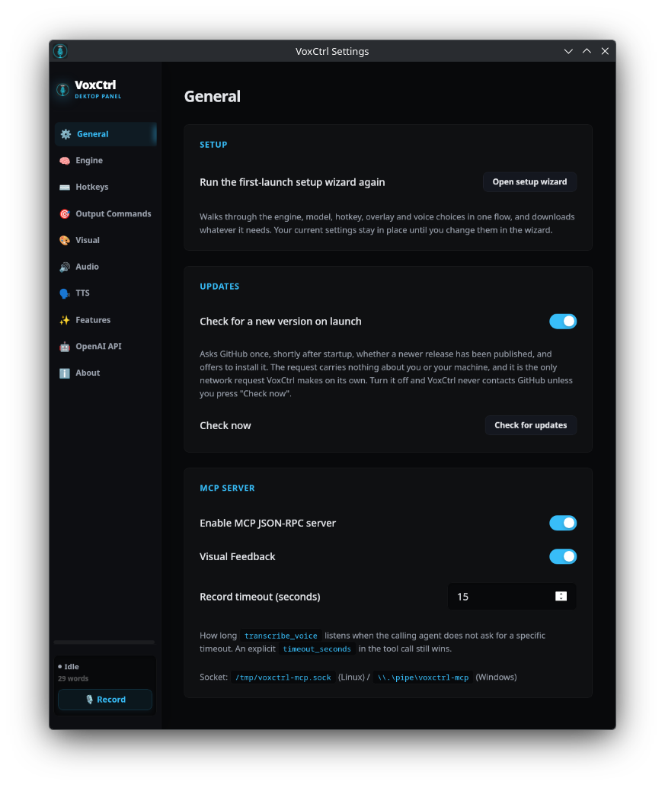
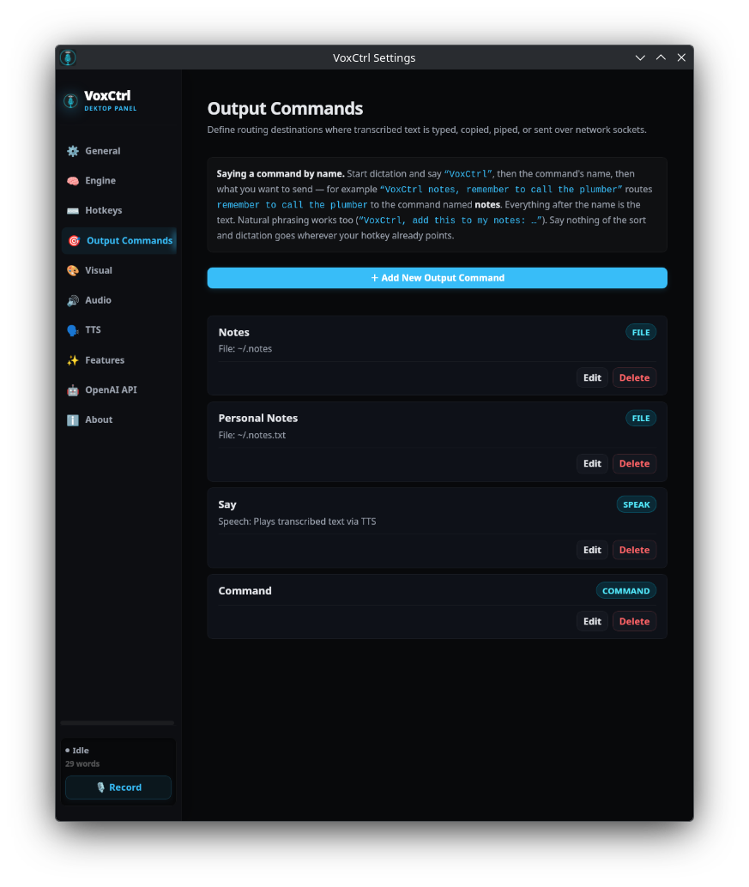

Real-time voice dictation and programmable Output Commands you trigger by name, out loud. whisper.cpp, Moonshine and Parakeet TDT run natively on your own CPU or GPU, hotkeys arrive through the XDG GlobalShortcuts portal, and a seven-step first-run wizard has the whole thing working before you ever open Settings.
VoxCtrl is not another wrapper around an expensive cloud API. It is a native desktop service written in Rust and Tauri — Linux-first, now with a Windows build in early beta.
whisper.cpp for reference accuracy, Moonshine ONNX for noisy rooms, and NVIDIA Parakeet TDT 0.6B for ultra-fast non-autoregressive transcription. All run on your own CPU or GPU — nothing leaves the machine.
Shortcuts register with your desktop environment. The OS tells VoxCtrl only when its own key fires. VoxCtrl cannot see your typing in browsers, terminals, or password managers.
Say “VoxCtrl notes, remember to call the plumber” and the text lands in your notes instead of your cursor. Twelve delivery types — inject, file, exec, pipe, socket, dbus, http, webhook, mcp, speak, chat, clipboard — plus the Voice Command Router that picks between them.
Hear synthesized replies aloud without cloud APIs. Choose from Breeze-TTS-2, Pocket-TTS voice cloning, Piper, Inflect Micro (38MB ONNX), or lightweight eSpeak-NG.
Exposes voice dictation and speech synthesis as high-level JSON-RPC tools to AI clients like Claude Desktop and Cursor via secure local Unix domain sockets.
Built on CPAL to keep capture latency down. Voice Activity Detection stops the recording when you stop talking, and optional RNNoise suppression filters fans and keyboards off the capture path.
New in v0.4.0. A fresh install picks an engine and model size (downloaded before you continue), records a hotkey and registers it with your desktop, chooses an overlay, runs a live dictation test, and optionally adds a voice — instead of dropping you into a settings window full of defaults nobody chose.
VoxCtrl asks GitHub once on launch whether a newer release exists, shows what changed, and — if you agree — downloads the build matching your install, verifies it against the published checksum, replaces itself and restarts. Nothing is replaced until a complete, verified file is on disk. One tick in Settings → General turns the check off.
Every place your speech can land is a named Output Command. Start dictation, say “VoxCtrl”, then the command's name, then what you want to send. Say nothing of the sort and dictation goes wherever your hotkey already points — so this costs you nothing until you want it.
Candidates are sorted by length, so a command called Personal Notes is matched before one called Notes — you don't have to rename anything to disambiguate.
Up to ten filler words may sit between the trigger and the command name — add, put, send, this, to my, please… — and connectors like saying, that says or with are trimmed off the front of the payload.
voxctrl, vox ctrl, vox control all count, any “<word> control” phrase counts, and a leading token within a small edit distance of voxctrl is accepted too.
A dictation with no trigger phrase in it falls straight through to the target your hotkey is bound to. The Command router is a superset of plain injection, not a mode you have to remember to leave.
Each Output Command declares one delivery type. Pick a tab to see what it does and the exact
targets.toml block that configures it. A thirteenth type, command, is the router
itself — it inspects the transcription and hands it to one of the others.
Commands live in targets.toml, or you can add them from
Settings → Output Commands. Either way the router picks up the change immediately —
there is no restart, and a hotkey binding can fan one utterance out to several commands at once
via target_ids.
The name the router matches is the command's id or its label — whichever
you find easier to say.
# Declare named output commands
[[target]]
id = "notes"
label = "notes"
delivery = "file"
file_path = "~/.notes.txt"
file_timestamp = true
[[target]]
id = "chat"
label = "chat"
delivery = "chat"
chat_url = "http://localhost:11434/v1/chat/completions"
chat_model = "llama3"[[target]]
id = "default"
label = "Focused Window"
delivery = "inject"
strip_newlines = falseNew in v0.4.0: a first launch walks through seven screens and ends with a configuration that actually runs — not a settings window full of defaults nobody chose. Watch it below, or take the controls yourself.
A few minutes of setup. Pick a transcription engine, bind a hotkey, choose how VoxCtrl shows itself, and test it end to end. Everything runs on this device — nothing leaves it.
By the last screen the wizard has written a real, working configuration: an engine and a model that is already on disk, a hotkey registered with your desktop, an overlay style and position, a voice if you wanted one, and a Command output that types into the focused window until the day you add a second destination. Each choice is saved the moment you make it, so quitting halfway keeps everything you picked — and nothing here is permanent, because Settings holds the same options afterwards.







Eleven tabs hold every option the wizard offered plus the ones it skipped. A v0.4.0 settings audit went through this window control by control and either implemented or removed anything that did nothing — so what you see here is what the app actually does.


Re-run the first-launch wizard whenever you like, hold the single HuggingFace access token every
gated voice model shares (Pocket-TTS, Breeze-TTS-2, VoxCPM2), decide whether VoxCtrl asks GitHub for
a newer release on startup, and switch the local MCP JSON-RPC server on or off. The socket path is
spelled out for both platforms: /tmp/voxctrl-mcp.sock on Linux,
\\.\pipe\voxctrl-mcp on Windows.
Twenty releases since v0.3.6, from the Breeze-TTS-2 engine to a single Linux build, a Windows beta, a Remote Speech Engine and now on-device dictation cleanup.
Fixed a WebKitGTK bug that left a blurry smear on screen as the overlay closed on released Linux AppImages, and two silent Windows failure modes — global hotkeys blocked by an elevated foreground window, and a microphone that opens successfully but delivers only silence. Mitigated a Hyprland WebKit crash and a stuck hold-to-talk gesture, and kept the D-Bus service reliably on the session bus. The separate Windows CPU-only installer is gone — the single -windows-x86_64-webgpu.exe build now covers both, accelerating Moonshine on any Direct3D 12 GPU and falling back to the CPU when there isn't one. VoxCtrl also added a proper MIT LICENSE file.
Bring your own speech engine: any OpenAI-compatible /v1/audio/transcriptions server can now handle transcription instead. S1-mini arrives as an on-device dictation cleanup pass — a Qwen3-0.6B model, run through llama.cpp in an isolated sidecar process, that smooths hesitations and self-corrections into clean prose — alongside VoxCPM2 as a sixth TTS voice. Settings gained a dedicated Post-Processing tab for S1-mini and text cleanup, and overlay styles became drop-in customizable via an index.html + style.css pair.
One Linux AppImage instead of separate CPU and Vulkan builds. The Vulkan build accelerates any GPU through the host driver and runs on the CPU when there is none, so the same file is right either way — and people on the old CPU AppImage still get updates.
Settings → Bug Report: file a report without a GitHub account, after reading the whole thing. Plus the Windows GPU build, which puts Moonshine on any Direct3D 12 GPU.
VoxCtrl's first Windows release. Settings → Engine now states plainly which engine this build can put on the GPU, rather than implying all of them can. And one unreadable value in the config no longer takes the rest of your settings down with it.
The seven-step first-run wizard, self-updating from GitHub releases with checksum verification, Output Targets renamed to Output Commands with the spoken form explained in the app itself, and a settings audit that either implemented or removed every control that did nothing.
X11 fixes: the event selection had to be split or the server refused every key, and the backend now requires XInput 2.1.
The AppImage starts on stock Linux Mint 21 and Ubuntu 22.04 desktops — no libfuse2, no
preparation.
The Breeze-TTS-2 engine, and a drastic speed-up for Piper.
Most voice dictation software acts like malware—reading all raw input events or requiring root udev privileges. VoxCtrl changes that permanently.
/etc/udev/rules.d/ alterations, no adding your user to the dangerous input group.
/dev/input/event* directly, granting read access to everything typed in browsers, terminals, and password managers.
As of v0.5.2 there is a single Linux build: the Vulkan AppImage accelerates any
NVIDIA, AMD or Intel GPU through the host driver and falls back to the CPU when there is no Vulkan
device — the same file is right whether or not you have a GPU. Run it once and VoxCtrl registers its
own desktop entry and icon. No libfuse2, no udev rule, no permissions to grant.
Grab the latest build from https://github.com/JRufer/VoxCtrl/releases/latest
# 1. Grab the one Linux build from the latest release
# https://github.com/JRufer/VoxCtrl/releases/latest
# (Vulkan-accelerated, and falls back to the CPU when there is no GPU)
# 2. Make it executable
chmod +x VoxCtrl-linux-x86_64-vulkan.AppImage
# 3. Run it. The first-run wizard opens, and VoxCtrl registers its own
# desktop entry and icon under ~/.local/share — no install step, no
# udev rule, no permissions to grant.
./VoxCtrl-linux-x86_64-vulkan.AppImagewtype (Wayland) or xdotool (X11) for typing